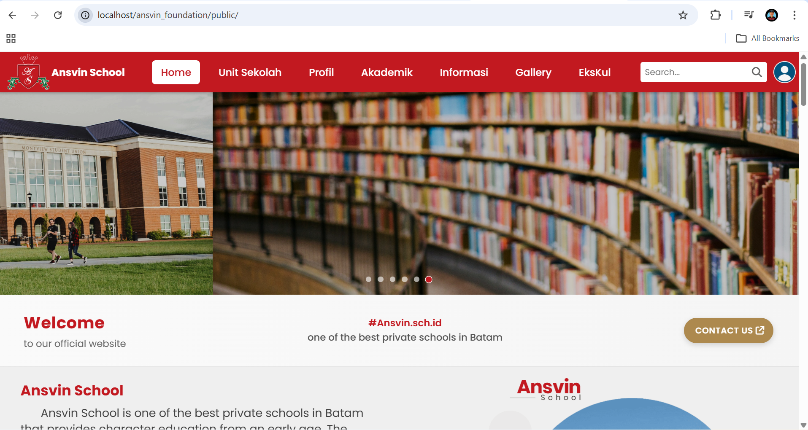

Laravel Developer · MVC · Ajax · Tailwind · Bootstrap
Founder of:
maskworkout.site ↗A digital fitness platform focused on gym & healthy lifestyle. Helping users generate personalized 30-day workout programs based on their goals, level, and training environment.
My Projects
Clone tampilan Facebook berbasis HTML, CSS, dan JavaScript statis. Fokus pada UI layout dan struktur file yang proper.
Live Demo →*view untuk laptop, mobile belum mendukung*
Website Yayasan Sekolah yang saling terhubung antara 4 web sekolah dalam 1 lokasi. Berbasis MVC

Let’s Build Something Great
Available for full-time roles
0821-6995-6714